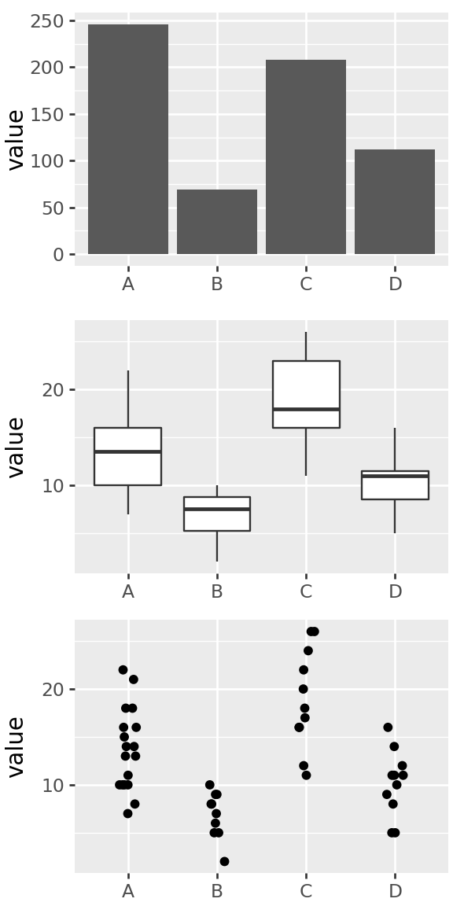
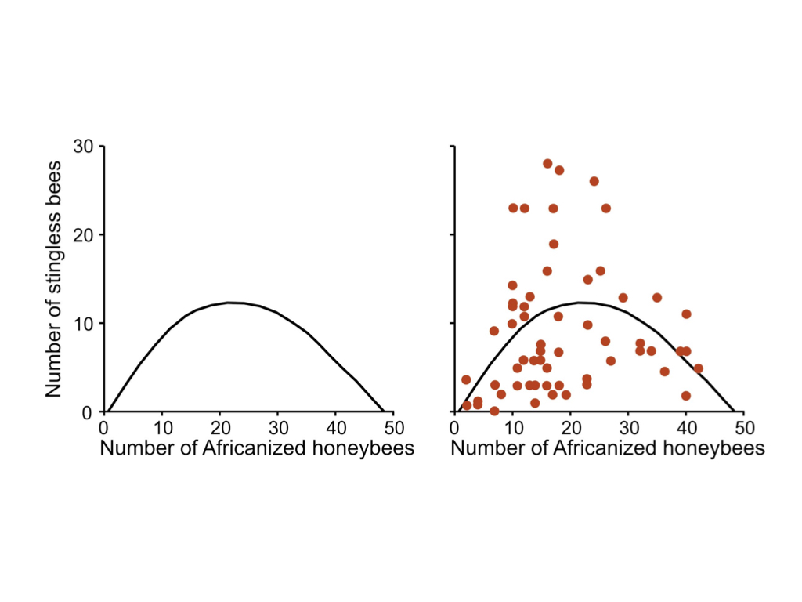
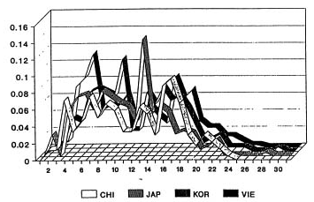
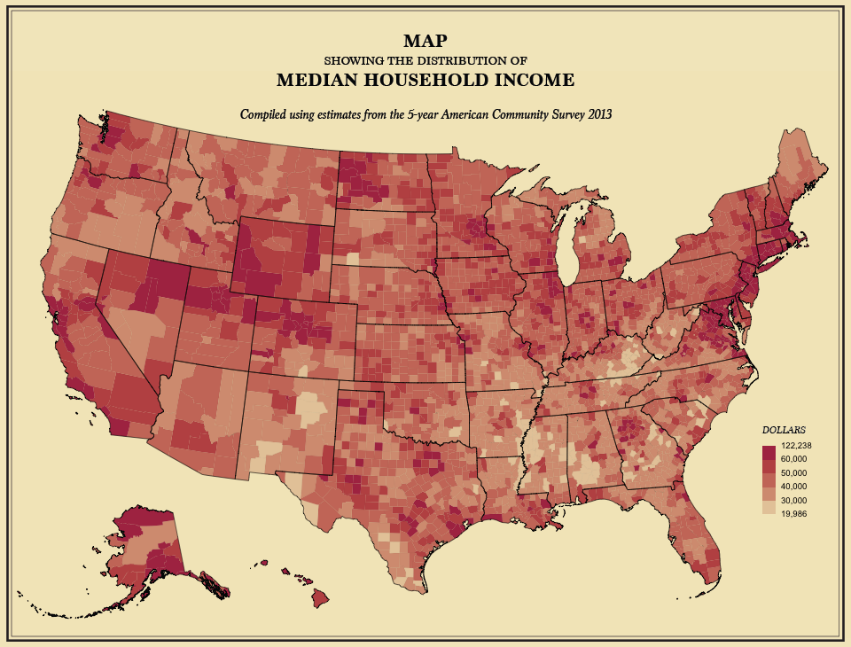
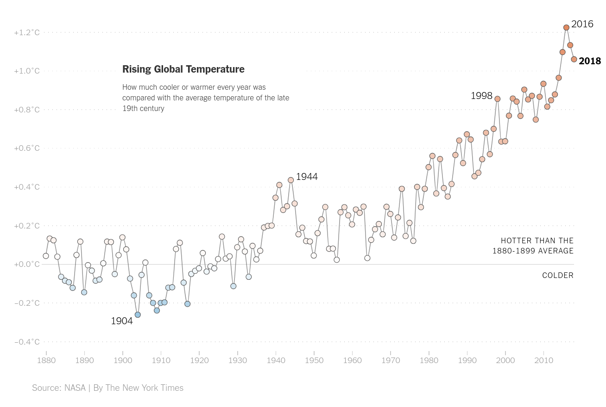
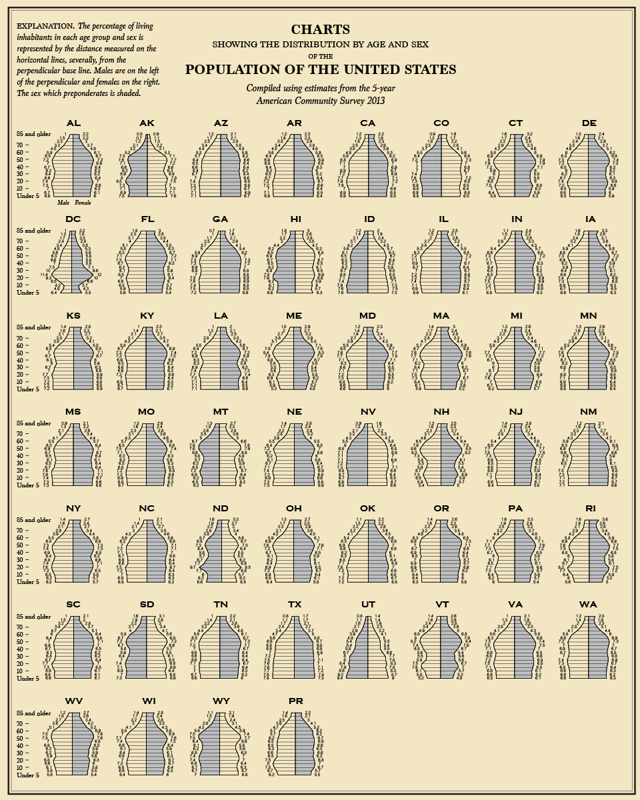
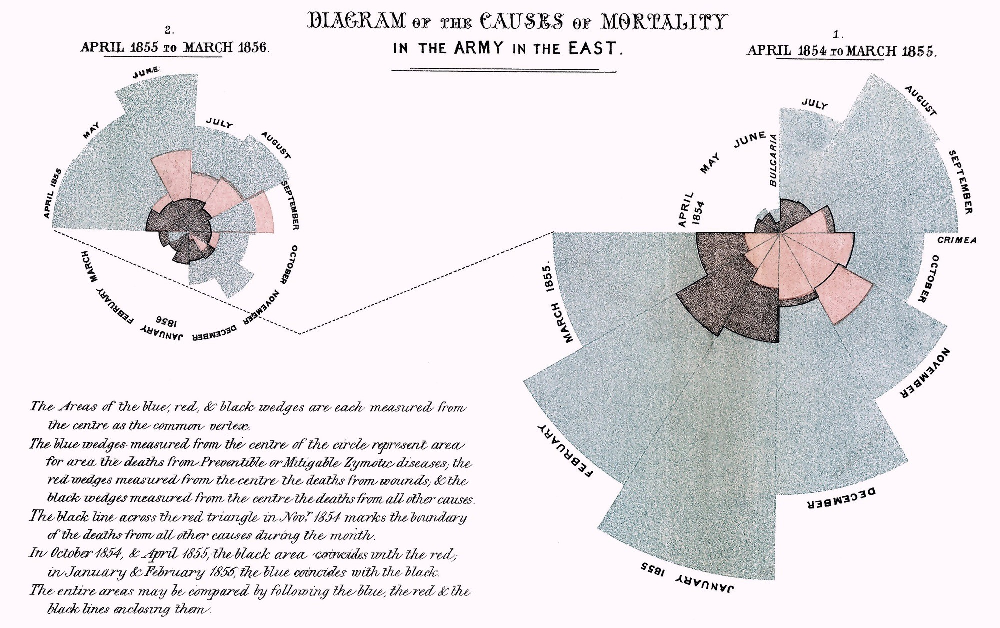

Graphics and visualization
Visualization
Goals
pattern discovery
efficient summary of information
visual/spatial analogy for quantitative patterns
Aim to maximize information and minimize ink.
paraphrased from Edward Tufte
Considerations
- Is the visual analogy appropriate for the type of data?
counts? quantities? multivariate? relationships?
- Are important comparisons clear?
between groups? differences? time trend?
- Are units easily interpretable?
meters? dollars? percent? relative change? is it isometric?
Principles of effective display
Show the data
Encourage the eye to compare differences
Represent magnitudes honestly and accurately
Draw graphical elements clearly, minimizing clutter
Make displays easy to interpret
Above all else show the data.
Tufte 1983

Think about what you want to communicate

from Roeder K (1994), Statistical Science 9:222-278, Figure 4 via Karl Broman
Deconstructing the graphics
How is information conveyed in this chart?
- percentage values are mapped to vertical coordinate
- columns are groups of people
- color of points shows “public” versus “police”
- lines connect ‘public’ and ‘police’ pair in a given group
- length of lines connecting points shows difference between public and police percentages
- labeled ticks on y-axis shows what the values are
- y-axis scale is chosen so vertical distance is proportional to percentage difference
Question: Pros/cons of this plot versus table with 6 numbers?
How about this chart?

From the 5-year American Community Survey 2013, via flowingdata

from NYT

From: flowingdata

Output formats
Options:
How does interactivity work?
tdlr; usually in the web browser, with javascript
For example:
- bokeh’s IMDB browser: an HTML5 Canvas
- plotly’s snowpack dashboard: an SVG
Considerations
- How much time do you want to spend making the plot?
- Who will see the plot, and what is their background?
- How much time will they spend looking at the plot?
- How will the plot be distributed?
- What do you want the plot to communicate?
For instance:
- Quick viz plot for me: what’s this look like?
- In-depth viz plots for mostly me: show me the data.
- Punchy plot for a report: here is the main point.
- Beautiful multi-layered plot for data nerds: the data are telling their own story.
- Dashboard: I am the commander of the Starship Enterprise.
In this class
Generally, exploratory data analysis is quick: we try out many things, and narrow in on useful visualizations.
So: simple, easy plots. We’ll be using plotnine, an implementation of the Grammar of Graphics, that encourages us to abstract the idea of visuallly representing data and makes it easy to incrementally develop plots.